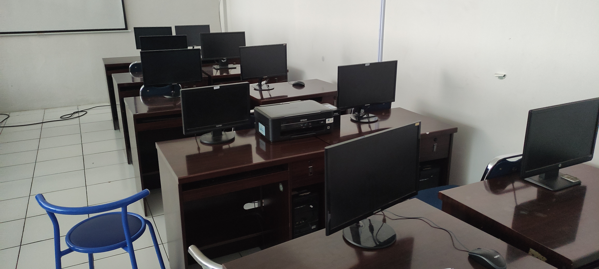
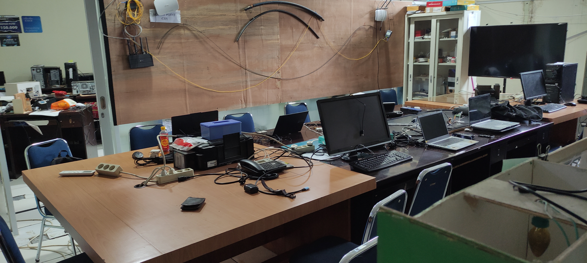
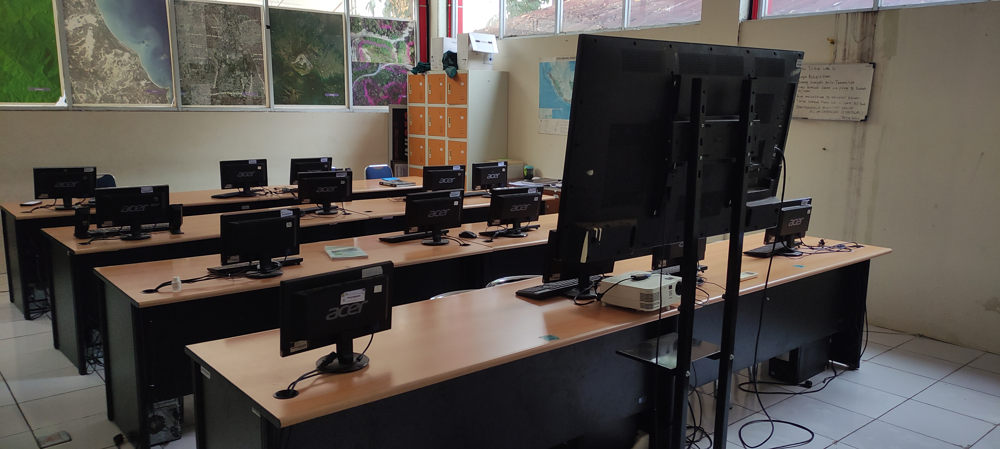
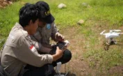
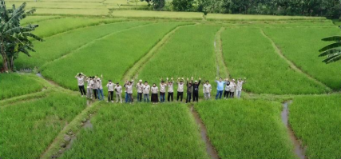
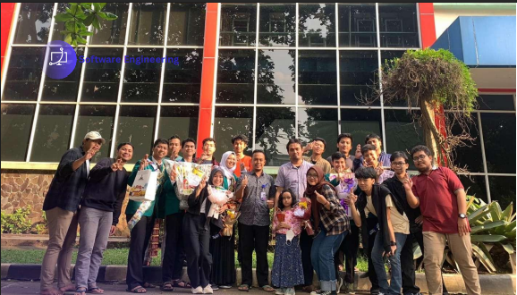

Selamat Datang di
Prodi Teknik Informatika
Empat peminatan unggulan — SE, CSN, GIT, dan KERIS — dalam satu ekosistem belajar di Universitas Ibn Khaldun Bogor.
Empat peminatan unggulan — SE, CSN, GIT, dan KERIS — dalam satu ekosistem belajar di Universitas Ibn Khaldun Bogor.
Peminatan
Pilih jalur yang paling sesuai dengan minat dan karier impianmu.
Mendalami arsitektur sistem, pengembangan aplikasi modern, dan rekayasa perangkat lunak yang andal.
Selengkapnya →Fokus pada infrastruktur jaringan, keamanan siber, dan sistem terdistribusi yang kompleks.
Selengkapnya →Menguasai sistem informasi geografis, penginderaan jauh, dan analisis data spasial untuk pemetaan modern.
Selengkapnya →Mendalami AI, sistem cerdas, dan rekayasa pengetahuan untuk menciptakan solusi inovatif berbasis data.
Selengkapnya →Keunggulan
Enam alasan mengapa Teknik Informatika UIKA adalah pilihan tepat untuk masa depanmu.
Dirancang bersama praktisi industri untuk memastikan lulusan siap kerja dan relevan dengan kebutuhan pasar.
Fasilitas praktikum lengkap — dari perangkat lunak, jaringan, AI, hingga geospasial dengan perangkat terkini.
Diampu oleh dosen bergelar S3 dan praktisi bersertifikasi dengan pengalaman industri bertaraf nasional.
Program studi terakreditasi A dengan pengakuan kualitas pendidikan di tingkat nasional.
Jaringan mitra industri luas dengan program magang bersertifikat dan inkubasi startup mahasiswa.
Mengintegrasikan nilai-nilai keislaman dalam setiap aspek pembelajaran untuk membentuk pribadi unggul.

Video Profil Program Studi
Tentang Kami
Program Studi Teknik Informatika Universitas Ibn Khaldun Bogor hadir sebagai wadah bagi para inovator muda untuk menguasai teknologi terkini. Kami menggabungkan fondasi akademik yang kuat dengan praktik industri nyata.
Dengan dukungan dosen berpengalaman dan fasilitas laboratorium modern, kami siap mencetak lulusan yang siap bersaing di kancah global.
"Menjadi Fakultas yang Islami dan Unggul dalam Riset di Bidang Teknik dan Sains untuk Mendukung Daya Saing Global pada Tahun 2040"
Menyelenggarakan pendidikan tinggi di bidang teknik dan sains yang bermutu, berstandar internasional, dan berlandaskan nilai-nilai keislaman untuk membentuk lulusan yang kompeten, berakhlak mulia, dan siap menjadi pemimpin umat.
Melaksanakan penelitian yang unggul, inovatif, dan relevan secara nasional maupun global dalam pengembangan ilmu teknik dan sains berbasis nilai-nilai Islam.
Mengembangkan kegiatan pengabdian kepada masyarakat yang solutif, berbasis hasil penelitian, dan selaras dengan kebutuhan umat.
Mewujudkan tata kelola fakultas yang profesional, akuntabel, dan berorientasi pada pencapaian akreditasi unggul nasional serta sertifikasi internasional.
Membangun jejaring kolaboratif di tingkat nasional dan internasional dalam bidang pendidikan, penelitian, dan pengabdian.
Fasilitas
Sarana praktik terbaik untuk menunjang kompetensi mahasiswa.

Pusat pengembangan aplikasi, pengujian perangkat lunak, dan kolaborasi proyek mahasiswa.

Fasilitas konfigurasi jaringan, simulasi siber, dan praktikum keamanan informasi.

Pusat riset machine learning, pengolahan data, dan pengembangan sistem cerdas.

Pusat analisis spasial, pemetaan digital, dan pengembangan media interaktif.
Lulusan
Peluang karier luas sesuai dengan peminatan yang kamu pilih.
Pengajar
Didukung oleh para ahli di bidang teknologi informasi.


Capaian
Bukti nyata kontribusi mahasiswa dan dosen di kancah kompetisi.
Dokumentasi
Momen perkuliahan, praktikum, dan aktivitas mahasiswa.



Ayo Bergabung
Bergabunglah bersama ribuan mahasiswa lainnya dan raih masa depan gemilang di Program Studi Teknik Informatika Universitas Ibn Khaldun Bogor.
Memuat gambar...

Struktur Organisasi Lab Software Engineering